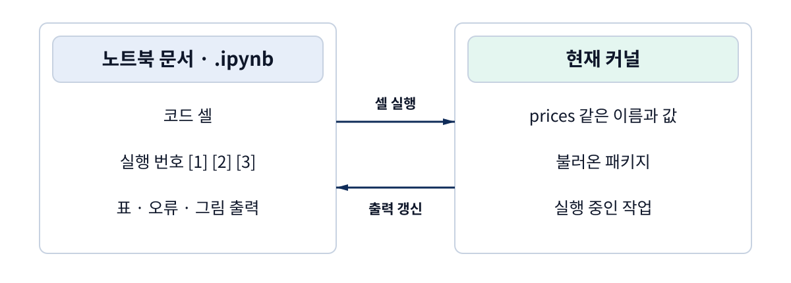
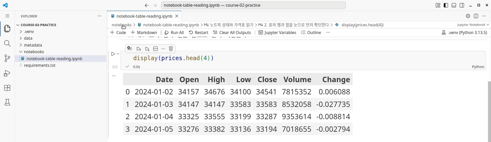
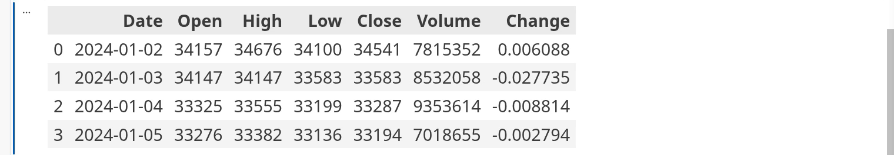
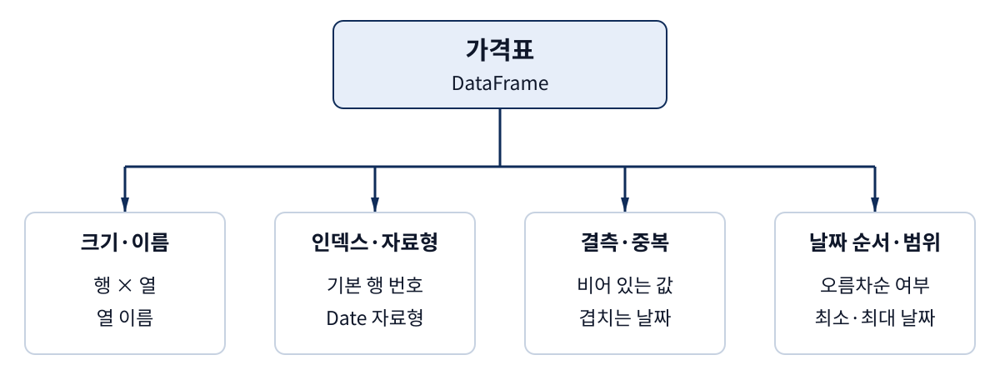
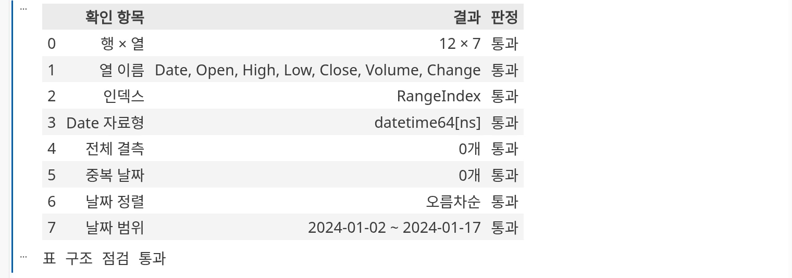
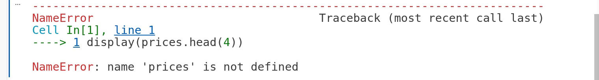
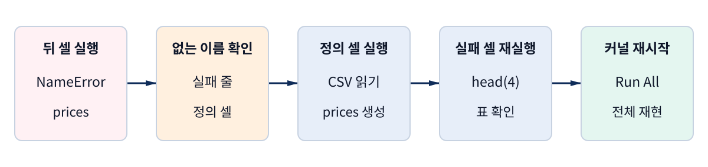
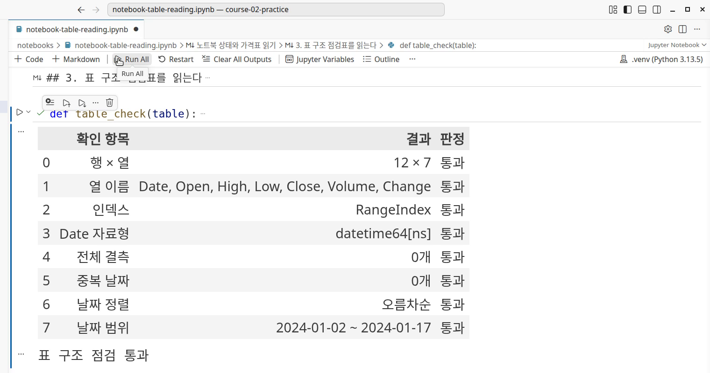
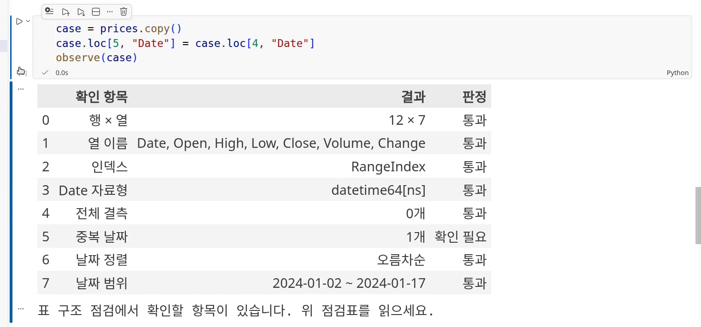
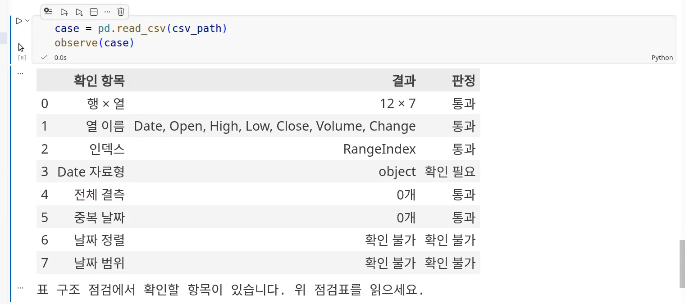

강의 상세 리포트
노트북을 운용한다 — 셀 실행 순서, 표의 행·열, 에러 메시지 읽기
저장된 출력과 현재 커널을 구분하고, 오류 복구와 표 구조 점검을 직접 재현한다
저장된 표를 보고 현재 커널의 상태를 예상해 본다
핵심 질문 — 어제의 표가 남아 있는 노트북을 오늘 열었다. 지금도 같은 결과를 만들 수 있는지, 표를 해석하기 전에 무엇부터 확인해야 할까?
핵심 결론 — 현재 커널에 필요한 이름과 값이 있는지 확인하고, 셀의 의존 순서에 따라 실행한다. 오류를 복구한 뒤에는 새 커널에서 전체 실행을 확인하고, 가격표의 구조를 여덟 항목으로 읽는다.
과정 1에서 만든 가격 노트북을 이어 받아 실행 결과를 읽고 확인하는 능력을 기른다. 코드를 모두 외울 필요는 없다. 어떤 파일을 읽었는지, 어느 셀에서 값이 만들어졌는지, 지금 보고 있는 결과가 무엇을 확인해 주는지는 설명할 수 있어야 한다.
실습 파일 제공: 실제 실험에 사용한 노트북·CSV·입력 메타데이터·패키지 목록과 시작 안내, 변형 실험 노트북, 결과 요약을 맨 아래 실습 파일 내려받기에서 받을 수 있다. 주 실습 노트북에는 검증한 출력이 저장돼 있다. 그 화면을 관찰한 뒤 직접 다시 실행한다. 본문에는 설명에 맞춰 편집한 짧은 실험 클립 여섯 개가 있다. 한국어 안내와 확대 화면으로 확인할 위치를 짚는다. 소리는 없으며, 작은 화면에서는 전체 화면으로 열거나 바로 위의 스냅샷을 확대해 읽는다. 먼저 결과를 예상한 뒤 재생하고 자신의 실행 결과와 비교한다.
표가 보이는 것과 변수가 있는 것은 다르다
노트북 파일을 열자 가격표가 나타났다고 하자. 아직 셀을 실행하지 않았다면, 그 표는 파일에 저장된 이전 출력일 수 있다. Jupyter의 파일 형식 문서에 따르면 코드 셀에는 코드, 실행 번호, 출력 목록이 들어간다. 노트북을 저장하면 이 정보를 파일로 남길 수 있다.
반면 커널은 코드를 실제로 실행하는 프로그램이다. Jupyter 커널 문서는
커널과 이를 사용하는 화면이 메시지를 주고받는 구조를 설명한다. Python 커널에
prices라는 이름과 가격표가 만들어지려면, 그 커널에서 값을 만드는 코드가 실행돼야 한다.
문서를 열어 예전 출력을 보는 일만으로 같은 변수가 생기지는 않는다.

예를 들어 CSV를 읽는 셀이 prices를 만들고, 그다음 셀이 prices.head(4)를 사용한다면
두 셀에는 의존 관계가 있다. 앞 셀에서 값이 준비돼야 뒤 셀이 그 값을 읽을 수 있다.
화면 위아래 순서는 이 관계를 나타내도록 작성하지만, 사용자가 뒤 셀부터 실행할 수도 있다.
실제로 열어 볼 파일과 화면
과정 1에서 준비한 VS Code·Python·Jupyter 환경을 사용한다. 이번 검증에서는 Python 3.13.5 가상 환경을 노트북 커널로 선택했다. 기본 파일 배치는 다음과 같다.
course-02-practice/
├── data/kodex200-price-fixture.csv
├── metadata/kodex200-price-fixture.metadata.json
├── notebooks/notebook-table-reading.ipynb
└── requirements.txt
VS Code에서 course-02-practice 폴더를 열고 노트북 오른쪽 위에서 이 프로젝트의
.venv 커널을 고른다. 터미널에 표시된 Python과 노트북이 선택한 커널이 같다고 추측하지
말고, 노트북의 선택 상태를 확인한다. VS Code 커널 관리 문서는
노트북별로 실행할 Python 환경을 선택하는 방법을 설명한다.

먼저 예상해 보자. 커널을 재시작한 직후, CSV를 읽는 셀을 건너뛰고
display(prices.head(4))만 실행하면 어떻게 될까? 화면에 예전 표가 보인다는 사실과,
지금 prices가 준비됐다는 사실을 구분하면 답을 예상할 수 있다. 아래 짧은 클립에서
예상과 실제 오류를 비교한다. 원인과 복구는 심화 절에서, 정상 입력의 전체 재실행은
core의 마지막 절에서 확인한다.
가격표를 크기·행의 기준·값의 형태·날짜 순서로 읽는다
한 행과 한 열이 무엇을 나타내는지부터 읽는다
이번 파일은 과정 1의 KODEX 200 가격 CSV에서 첫 12개 데이터 행을 발췌한 작은 고정 입력이다. 시작 날짜는 2024년 1월 2일, 마지막 날짜는 1월 17일이다. 네트워크에서 매번 새로운 가격을 받지 않으므로, 같은 파일로 실행 순서와 표 읽기를 반복할 수 있다.
pandas에서 이 표를 다루는 객체를 DataFrame이라고 한다. 여기서는 한 행에 한 날짜의
가격 관련 값이 있고, 열마다 날짜·시가·고가·저가·종가·거래량·변화율 값이 놓여 있다.
수익률 계산이나 가격 조정의 적절성을 판단하기 전에, 어떤 필드가 들어 있는지부터 확인한다.
특히 Change의 계산 정의와 조정 의미는 열 이름만으로 확정하지 않는다.
prices = pd.read_csv(csv_path, parse_dates=["Date"])
display(prices.head(4))
첫 줄은 CSV를 읽어 prices에 담는다. parse_dates=["Date"]는 지정한 열을 날짜로
해석하도록 요청하는 옵션이다. 둘째 줄의 head(4)는 처음 네 행을 보여 준다.
이 미리 보기만으로 전체 행 수나 마지막 날짜, 다른 행의 결측·중복까지 알 수는 없다.

인덱스는 행을 구별하고 선택할 때 쓰는 표의 기준이다. 이 파일을 기본 설정으로 읽으면
0부터 시작하는 RangeIndex가 붙는다. “0번 행”은 첫 관측치를 가리키는 번호이고
“2024-01-02”는 그 행의 날짜 값이다. 다른 노트북은 날짜를 인덱스로 삼을 수도 있으므로,
인덱스가 항상 기본 번호라고 외우지는 않는다.
여덟 항목은 서로 다른 질문에 답한다

| 확인 항목 | 이번 실행 결과 | 결과를 읽는 질문 |
|---|---|---|
| 행 × 열 | 12 × 7 |
전체 관측치와 필드 수가 이 발췌본의 설명과 같은가? |
| 열 이름 | Date, Open, High, Low, Close, Volume, Change |
필요한 필드가 기대한 이름과 순서로 있는가? |
| 인덱스 | RangeIndex |
이 파일에서는 0부터 시작하는 기본 행 번호를 쓰는가? |
| Date 자료형 | datetime64[ns] |
날짜처럼 보이는 문자열이 아니라 pandas 날짜형으로 읽혔는가? |
| 전체 결측 | 0개 |
pandas가 결측으로 인식한 칸이 있는가? |
| 중복 날짜 | 0개 |
이미 나온 날짜가 두 번째 이후 행에 다시 등장하는가? |
| 날짜 정렬 | 오름차순 |
위에서 아래로 읽을 때 날짜가 뒤로 가지 않는가? |
| 날짜 범위 | 2024-01-02 ~ 2024-01-17 |
최소·최대 날짜가 이 발췌본의 범위와 같은가? |
자료형은 프로그램이 그 값을 어떤 종류로 다루는지 나타낸다.
datetime64[ns]는 pandas의 날짜·시각 자료형이고, [ns]는 저장 해상도를 나타낸다.
이번 원본이 나노초 간격으로 관측된 데이터라는 뜻은 아니다. prices.dtypes로
열별 자료형을 읽을 수 있지만, 이번 자동 점검표의 자료형 조건은 Date 열만 검사한다.
가격·거래량 열까지 모두 검증한 결과로 확대하지 않는다.
pandas의 dtypes 문서는
이 속성이 열별 자료형을 돌려준다고 설명한다.
결측은 값이 없다고 표시된 칸이고, 중복 날짜는 같은 날짜가 다시 나온 행이다.
이번 코드의 isna().sum().sum()은 결측 칸의 수를 센다. 결측이 있는 행의 수와
다를 수 있다. duplicated()의 기본 동작은 같은 값의 첫 등장을 제외하고 이후 등장을
중복으로 표시한다. 같은 날짜 두 행이면 이번 집계는 1개다.
결측 판정 문서와
중복 판정 문서에
각 함수의 판정 범위가 설명돼 있다.
날짜가 오름차순이라는 결과는 같은 날짜가 없다는 뜻까지 포함하지 않는다. 같은 날짜가 이어져도 날짜가 뒤로 가지 않을 수 있다. 반대로 최소·최대 날짜가 같아도 가운데 행의 순서는 섞일 수 있다. 그래서 정렬·중복·범위를 별도 항목으로 읽는다.

오류가 가리키는 이름을 찾고 필요한 셀부터 복구한다
새 커널에서 뒤 셀만 실행해 실패를 확인한다
실험에서는 저장된 출력이 있는 노트북의 커널을 재시작한 뒤, 두 번째 코드 셀을 먼저 실행했다.
그 셀의 코드는 display(prices.head(4))다. 앞의 CSV 읽기 셀을 실행하지 않았으므로
현재 커널에는 prices가 없었고 다음 오류가 나타났다.
NameError: name 'prices' is not defined

Python 예외 문서에서
NameError는 참조한 이름을 찾지 못했을 때의 예외다. 이 메시지만으로 모든 원인이
“앞 셀 미실행”이라고 정해지지는 않는다. 철자 오류, 다른 커널의 사용, 앞 셀 자체의 실패도
확인해야 한다. 이번 실험은 새 커널에서 읽기 셀을 건너뛴 상태를 알고 있으므로
실행 순서를 원인으로 좁힐 수 있다.
| 읽을 위치 | 실제 표시 | 이어서 확인할 것 |
|---|---|---|
| 예외 종류 | NameError |
값을 찾지 못한 이름 문제인가? |
| 실패 코드 줄 | display(prices.head(4)) |
어떤 이름을 사용하다 멈췄는가? |
| 마지막 줄 | name 'prices' is not defined |
같은 철자의 prices를 어디에서 만드는가? |
| 앞 셀 | prices = pd.read_csv(...) |
그 셀이 현재 커널에서 성공했는가? |
앞 셀의 성공과 실패한 셀의 재실행을 이어서 확인한다
prices를 만드는 셀을 실행하자 불러오기 완료: 12행 × 7열이 표시됐다. 그다음
미리 보기 셀을 다시 실행하자 첫 네 행의 가격표가 나타났다. 필요한 셀만 다시 실행해
원인과 복구를 확인하는 것이 최소 복구다.
앞 셀이 성공해도 다른 셀에 표시된 예전 오류가 자동으로 사라질 필요는 없다. 실패했던 미리 보기 셀을 다시 실행해야 그 셀의 출력도 갱신된다. 코드를 고쳤거나 앞 셀을 실행했다는 사실만으로 화면의 모든 결과가 최신이라고 보지 않는다.

대조 실험에서는 정상 커널에서 prices를 prcies로 잘못 썼다. CSV 읽기 셀을 다시
실행해도 오타를 쓴 셀은 계속 NameError를 냈다. 이때는 앞 셀을 반복하는 대신 실패 줄의
철자를 고쳐야 한다. 오류 문구에 나온 정확한 이름을 읽는 이유다.
커널을 다시 시작하고 전체 실행으로 완료를 판정한다
준비된 파일만으로 결과를 다시 만든다
이번 노트북의 코드 셀은 세 개다. 첫 셀이 CSV를 읽고, 둘째 셀이 첫 네 행을 보여 주며, 셋째 셀이 표 구조를 점검한다. 앞에서 몇 개의 셀을 따로 실행했더라도 마지막에는 새 커널에서 이 순서가 완결되는지 확인한다.
- CSV·노트북·메타데이터를 안내한 폴더에 놓고 해당 가상 환경을 커널로 선택한다.
- 노트북 위의 Restart를 누른 뒤 재시작을 확인한다.
- 재시작이 끝나면 Run All을 누른다.
- 읽기 결과, 미리 보기, 여덟 항목의 점검표를 확인하고 노트북을 저장한다.
VS Code 노트북 문서는 전체 실행, 출력 지우기, 커널 재시작을 별도 동작으로 설명한다. Clear All Outputs는 보이는 출력을 지우는 기능이므로 커널 재시작을 대신하지 않는다. 반대로 Run All만 누르면 기존 커널의 이름과 값이 남아 있을 수 있다. 이번 완료 확인에서는 재시작과 전체 실행을 이어서 수행했다.

| 완료 확인 | 이번 관측 | 실패했을 때 먼저 볼 곳 |
|---|---|---|
| 입력 파일 | 12행·7열 발췌본의 해시가 메타데이터와 일치 | 파일명, 파일 배치, 다른 판의 CSV 여부 |
| 실행 순서 | 새 커널에서 코드 셀 세 개가 1·2·3으로 완료 | 첫 오류가 난 셀과 그 앞 셀 |
| 오류 출력 | 0개 | 예외 종류, 실패 코드 줄, 마지막 줄 |
| 실제 결과 | 같은 가격표와 날짜 범위, 여덟 항목 통과 | 통과 문구 앞의 항목별 결과 |
| 별도 재현 | 빈 작업 폴더의 새 커널에서도 전체 실행 성공 | 숨은 파일·기존 변수·다른 커널에 의존했는지 |
CSV를 찾지 못했다면 변수를 정의하는 셀을 무작정 반복하기 전에 파일 배치를 확인한다.
날짜 열 이름이 바뀌었다면 읽기 단계에서 ValueError가 날 수 있다. 오류가 나는 위치가
다르므로 모두 같은 “노트북 오류”로 묶지 않는다. 이 실습은 데이터 파일을 자동으로 고치지
않으며, 제공한 정상 파일을 복원한 뒤 다시 실행한다.
통과한 결과의 의미를 자기 말로 설명한다
여기서 확인한 것은 이 입력 파일로 노트북을 다시 실행할 수 있고, 정해 둔 표 구조 조건이 맞는다는 사실이다. 가격이 정확한지, 어떤 조정이 적용됐는지, 그 시점에 실제로 알 수 있었는지까지 확인한 결과는 아니다. 다음 영상에서는 한 값이 어느 원천에서 어떤 경로를 거쳐 왔는지 설명한다.
직접 완료해 볼 과제는 세 가지다. 실행 전에는 저장된 표를 보고 새 커널의 동작을 예상한다. 실행 중에는 가격표의 행 번호와 날짜 열, 점검표의 관측값을 구분한다. 실행 후에는 “어떤 파일로, 어떤 순서로, 어디까지 확인했는가”를 한 문장으로 말한다. 심화까지 읽었다면 의도적으로 뒤 셀을 먼저 실행한 뒤 오류에서 복구해 본다.
잘못된 입력을 넣어 점검표가 놓치는 것까지 확인한다
확인 필요와 확인 불가를 구별한다
정상 파일에서만 점검표를 실행하면, 문제가 생겼을 때도 진단을 보여 주는지 알 수 없다. 제작 실험에서는 정상 원본을 복사한 뒤 한 조건씩 바꿨다. 같은 변경이 두 항목에 영향을 주기도 한다. 첫 행 하나를 빼면 행 수와 시작 날짜가 함께 달라지는 것이 그 예다.
기존 코드에서는 날짜를 문자열로 읽었을 때 날짜 범위를 표시하려다
AttributeError: 'str' object has no attribute 'date'가 났다. 날짜 열이 없는 표를
넘기면 KeyError로 멈췄다. 따라서 날짜 열의 존재와 자료형을 먼저 확인하고, 계산에
필요한 조건이 없으면 그 이유가 점검표에 남도록 코드를 보강했다.
| 표시 | 뜻 | 이번 실험의 예 |
|---|---|---|
| 통과 | 해당 항목의 기대 조건을 충족했다 | 정상 입력의 날짜 범위 |
| 확인 필요 | 검사할 수 있었고 기대 조건과 달랐다 | 결측 한 칸, 중복 날짜, 문자열 Date |
| 확인 불가 | 이 항목을 계산할 선행 조건이 없다 | 날짜형이 아니어서 날짜 정렬·범위를 판단하지 않음 |
dates = table["Date"] if "Date" in table.columns else None
date_type_ok = dates is not None and pd.api.types.is_datetime64_any_dtype(dates)
dates_ready = date_type_ok and len(dates) > 0 and not dates.isna().any()
이 코드는 날짜를 계산하기 전에 필요한 상태를 확인한다. 날짜가 준비됐을 때만 최소·최대와
정렬을 계산한다. 점검표에 통과하지 않은 항목이 있으면, 표를 먼저 보여 준 뒤
RuntimeError로 멈춘다. 자동으로 날짜를 바꾸거나 중복 행을 지우는 처리는 넣지 않았다.
조건을 바꿨을 때 실제로 달라진 결과
| 실험 | 바꾼 조건 | 실제 관측 |
|---|---|---|
| E3-M | CSV의 Close 한 칸을 비움 | 전체 결측 1개, 날짜 범위 유지 |
| E3-D | 내부 날짜 하나를 앞 행과 같게 바꿈 | 중복 날짜 1개, 오름차순은 통과 |
| E3-S | 가운데 두 행의 순서만 바꿈 | 정렬은 확인 필요, 최소·최대 날짜 유지 |
| E3-T | 날짜 파싱 옵션을 빼고 읽음 | Date가 object, 날짜형은 확인 필요, 날짜 정렬·범위는 확인 불가 |
| E3-C | 날짜 값 하나를 not-a-date로 바꿈 | parse_dates를 지정해도 Date가 object로 남음, 날짜 계산은 확인 불가 |
| E3-N | Date 열 이름을 TradeDate로 바꿈 | 지정한 Date를 읽는 단계에서 ValueError. 이름을 바꾼 표를 검사하면 필수 열과 계산 불가 항목을 표시 |
| E3-R | 첫 행 하나를 제거함 | 11행, 시작 날짜가 1월 3일로 바뀜 |
| E3-I | 기본 인덱스를 문자열 행 이름으로 바꿈 | 이 파일의 기본 인덱스 조건은 확인 필요 |

pandas의 정렬 속성 문서는
같은 값이 이어지는 경우도 비감소 순서로 판정하는 예를 보여 준다. 따라서 이번
is_monotonic_increasing 결과를 “날짜가 매번 엄격히 증가하고 중복도 없다”로
해석하지 않는다.

pandas의 read_csv 문서는
날짜로 해석할 수 없는 값이 있으면 열이 object로 남을 수 있다고 설명한다.
그러므로 parse_dates 옵션을 썼다는 사실과 실제 날짜형으로 읽혔다는 결과도 구분한다.
이 차시에서는 불일치를 식별하고 정상 입력을 복원하는 데까지 확인한다.
결측 판정에도 입력 경로의 차이가 있다. 이번 CSV의 빈 칸은 기본 읽기 설정에서 결측으로
인식됐지만, 메모리에 직접 만든 빈 문자열 ""에 isna()를 적용한 결과는 False였다.
CSV를 읽으면서 변환된 값과 이미 만들어진 문자열을 같은 상태로 보지 않는다.
결측 0개라는 결과도 잘못된 값이나 잘못된 자료형이 하나도 없다는 증명은 아니다.
재현 조건과 실험 결과
어떤 입력과 환경에서 확인했는가
2026년 9월 5일, VS Code 1.135.0에서 주 실습과 변형 사례를 실행했다. Python 확장은 2026.4.0, Jupyter 확장은 2025.9.1이며, 커널은 Python 3.13.5, pandas 2.3.3, ipykernel 7.3.0을 사용했다. 화면은 Linux 환경의 실제 VS Code다. 메뉴 모양과 단축키는 운영체제·설정에 따라 달라질 수 있으므로 실제 버튼 이름을 함께 설명했다.
정상 실행·변형 입력·이름 오류와 오타·빈 문자열·새 커널 재현을 합쳐 자동 검증 기록 15건이 모두 기대값과 일치했다. 주 실험 원본은 저장 출력→재시작→실패→복구→전체 실행이 이어지는 화면을 담고, 변형 실험 원본에는 여덟 사례를 기록했다. 본문에는 각 설명에 필요한 구간만 여섯 클립, 총 99초로 편집해 넣었다. 원본의 실행 속도는 유지하고, 한국어 안내· 강조 상자·확대를 더했다. 나머지 변형도 표 5와 다운로드 노트북에서 조건과 결과를 확인할 수 있다. 원본·체크포인트·실행 노트북은 제작 기록으로 보존했다.
입력 CSV의 SHA-256은
f2914729b9dfd0f7a9fd84d790f10f7c0b46038957a62d6c7bb2262c566e1dbf다.
과정 1 원본의 머리글과 첫 12개 데이터 행이 같은지 직접 대조했다.
행 수·날짜 범위·중복·빈 칸은 CSV 자체에서도 확인했고, 정수 가격·거래량 값은 원본과
대조했다. Change의 부동소수점 파싱 대조에는 절대 오차 10^-15를 허용했다.
이 대조는 파일을 읽는 과정의 일치를 확인하며 공급자 원천 가격의 정확성을 인증하지 않는다.
외부 1차 자료에서 확인한 내용
| 자료 | 이 리포트에서 확인한 내용 |
|---|---|
| Jupyter 노트북 파일 형식 | 코드 셀에 코드·실행 번호·출력이 저장되는 구조 |
| Jupyter 커널 | 코드를 실행하는 커널과 화면이 메시지를 주고받는 구조 |
| VS Code 노트북 | 셀·전체 실행, 출력 지우기, 커널 재시작의 실제 기능 구분 |
| VS Code 커널 관리 | 노트북에서 실행할 Python 환경을 선택하는 방법 |
| Python NameError | 참조한 이름을 찾지 못했을 때 발생하는 예외의 의미 |
| pandas 2.3.3 read_csv | 날짜 파싱과 기본 결측 표식, 날짜 변환 실패 시 자료형 |
| pandas 2.3.3 dtypes | 열별 자료형 확인 |
| pandas 2.3.3 isna | 결측 판정과 빈 문자열의 취급 |
| pandas 2.3.3 duplicated | 선택한 값·열의 중복 여부와 첫 등장 처리 |
| pandas 2.3.3 is_monotonic_increasing | 같은 값이 이어져도 비감소 순서로 판정될 수 있음 |
실습 파일 내려받기
- 실습 시작 안내 — 파일 배치, 커널 선택, 실행 순서와 기대 결과
- 주 실습 노트북 — 저장된 출력 관찰, NameError 복구, 여덟 항목 점검
- 고정 가격 CSV — 12행·7열의 반복 실습 입력
- 입력 메타데이터 — 원본 유래, 발췌 범위, 파일 해시
- 패키지 목록 — 이번 커널의 pandas·ipykernel 버전
- 변형 실험 노트북 — 여덟 조건을 바꾸어 결과를 확인하는 추가 실험
- 실험 결과 요약 CSV — 실험별 조건·관측 결과·검증 판정
주 실습부터 완료한다. 변형 실험 노트북도 notebooks/에 놓으며, 각 사례는 정상 가격표의
별도 복사본에서 시작한다. 변형 실험의 오류를 없애려고 원본 CSV를 고칠 필요는 없다.